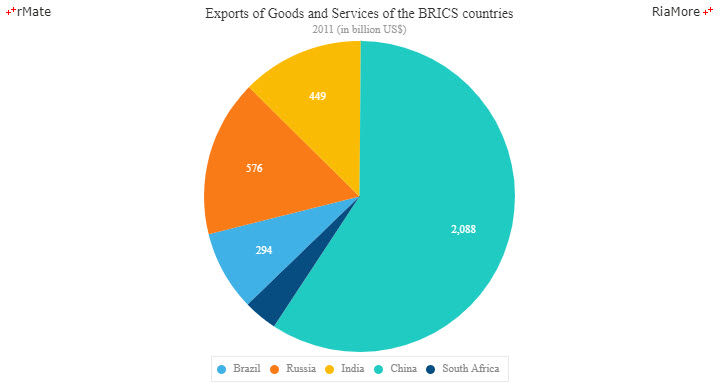
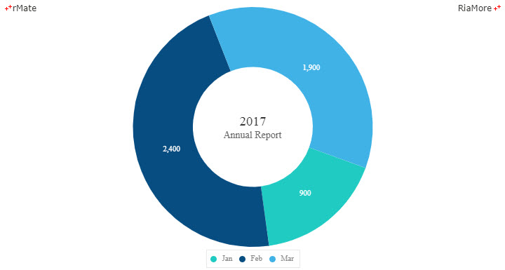
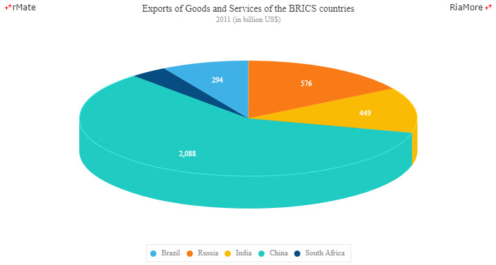
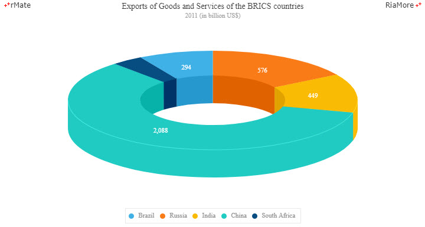
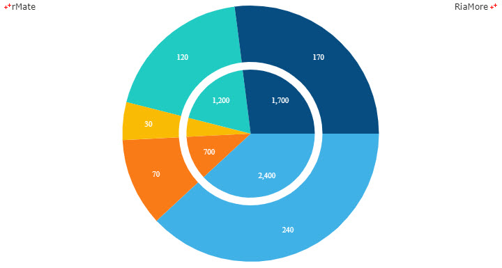
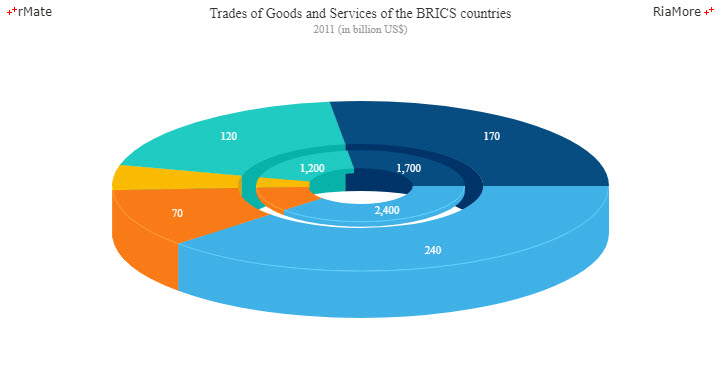
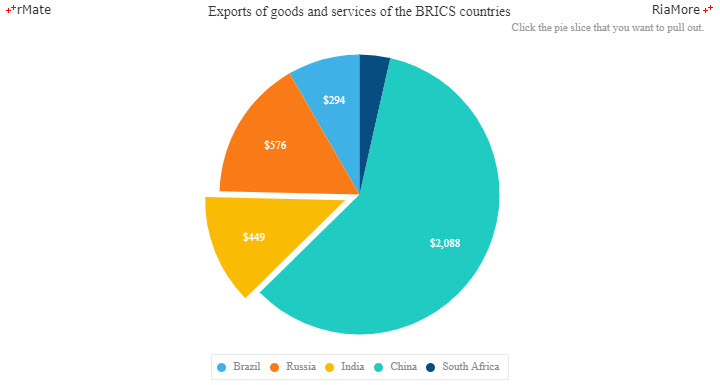
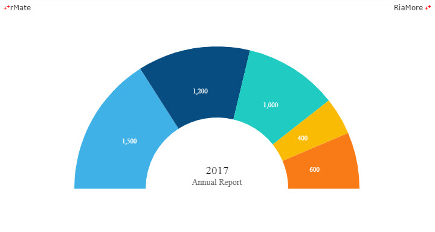
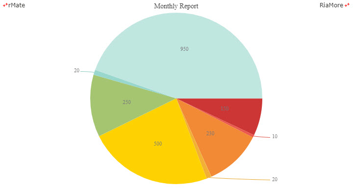

파이 차트 / 도넛 차트
파이 차트는 데이터 시리즈의 전체 합을 100% 로 했을 때 각 데이터들이 차지하는 상대적인 비율에 따라서 슬라이스의 크기를 할당하여 원형 차트를 표현합니다.
따라서 각 슬라이스 곡선의 길이는 데이터의 크기와 비례합니다.
도넛 차트는 일종의 파이 차트이며 파이 차트의 중앙 부분이 잘려나간 형태입니다.
중앙의 잘려나간 영역에 텍스트 정보를 표현할 수 있습니다.
파이(도넛) 차트의 사용은 일반적으로 데이터 시리즈를 구성하는 카테고리의 수가 6 개 이하일 때가 적절하며 이보다 많아지면 가독성이 떨어져서 차트를 이해하기 어려울 수 있습니다.
따라서 이 경우는 컬럼 차트와 같이 다른 적절한 차트 유형을 사용하는 것을 고려할 필요가 있습니다.
파이 차트
파이 차트는 <Pie2DChart> 노드의 series 속성값에 <PieD2Series> 노드를 설정하여 생성할 수 있습니다.
파이 차트에서 처음 슬라이스가 시작되는 위치는 <Pie2DSeries> 노드의 startAngle 속성 (기본값: “0”)에 의해서 결정됩니다.
이 값은 원의 중심에서 오른쪽으로 수평 방향 즉 시계 3 시 방향(기본값: “0”)에서 시작하여 시계 방향으로 진행하는 각도 값에 해당합니다.
다음은 처음 슬라이스(Brazil)가 시계 3 시 방향에서 시작하여 시계 방향으로 “136” 도 위치에서 시작하는 파이 차트를 생성하는 코드와 이를 적용해서 출력한 차트의 예제입니다.
<Pie2DChart showDataTips="true">
<series>
<Pie2DSeries nameField="Country" field="Export" labelPosition="inside" color="#ffffff" startAngle="136">
<showDataEffect>
<SeriesSlide duration="1000"/>
</showDataEffect>
</Pie2DSeries>
</series>
</Pie2DChart>
var chartData = [
{"Country" : "Brazil", "Export" : 294},
{"Country" : "Russia", "Export" : 576},
{"Country" : "India", "Export" : 449},
{"Country" : "China", "Export" : 2088},
{"Country" : "South Africa", "Export" : 124}
];

See the CodePen 알메이트 차트 - 파이 차트
도넛 차트
도넛 차트는 <Pie2DChart> 노드의 innerRadius 속성을 설정하여 생성할 수 있습니다.
innerRadius 속성의 기본값은 “0” 이며 파이 차트 원의 반지름에 대한 중앙에 잘려나간 원의 반지름의 비율을 의미합니다.
다음은 중앙에 잘려나간 원의 반지름을 파이 차트 원의 반지름의 절반(“0.5”)으로 설정하는 코드와 이를 적용해서 출력한 차트의 예제입니다.
<Pie2DChart innerRadius="0.5" showDataTips="true">
<series>
<Pie2DSeries nameField="Month" field="Profit" startAngle="20" renderDirection="clockwise" labelPosition="inside" color="#ffffff">
<showDataEffect>
<SeriesZoom duration="1000"/>
</showDataEffect>
</Pie2DSeries>
</series>
<backgroundElements>
<CanvasElement>
<Label text="2017" height="24" horizontalCenter="0" verticalCenter="-10" fontSize="19" color="#333333" backgroundAlpha="0"/>
<Label text="Annual Report" height="24" horizontalCenter="0" verticalCenter="10" fontSize="14" color="#666666" backgroundAlpha="0"/>
</CanvasElement>
</backgroundElements>
</Pie2DChart>
위 예에서는 중앙에 잘려나간 원에 텍스트 정보(2017, Annual Report)가 표시되어 있습니다.
이는 차트의 배경(<backgroundElements> 노드)에 <CanvasElement> 노드와 <Label> 노드를 설정하여 표시할 수 있습니다.
<Label> 노드에는 표현하고자 하는 텍스트의 내용(text 속성)과 텍스트가 표시되는 좌표 정보(horizontalCenter, verticalCenter 속성)가 설정되어 있습니다.

See the CodePen 알메이트 차트 - 도넛 차트
3D 파이(도넛) 차트
3D 파이 차트는 <Pie3DChart> 노드의 series 속성값에 <Pie3DSeries> 노드를 설정하여 생성할 수 있습니다.
3D 파이 차트에서 실린더의 모양은 <Pie3DChart> 노드의 depth 속성과 elevation 속성을 이용하여 조절할 수 있습니다.
두 속성에 대한 설명은 다음과 같습니다.
| 속성명 |
유효값 (*: 기본값) |
설명 |
| depth |
숫자
기본값: 50
|
실린더의 깊이를 지정합니다.
|
| elevation |
-90 과 90 사이의 숫자
기본값: 70
|
실린더의 기울기 각도를 지정합니다.
|
다음은 depth 속성과 elevation 속성이 기본값(depth: “50”, elevation:“70”, 지정되지 않음)인 3D 파이 차트를 생성하는 코드와 이를 적용해서 출력한 차트의 예제입니다.
<Pie3DChart showDataTips="true" paddingLeft="100" paddingTop="50" paddingRight="100" paddingBottom="50">
<series>
<Pie3DSeries nameField="Country" field="Export" labelPosition="inside" color="#ffffff" startAngle="240">
<showDataEffect>
<SeriesInterpolate duration="1000"/>
</showDataEffect>
</Pie3DSeries>
</series>
</Pie3DChart>

See the CodePen 알메이트 차트 - 3D 파이 차트
다음은 innerRadius 속성을 “0.5” 로 설정하여 3D 도넛 차트를 생성하는 코드와 이를 적용해서 출력한 차트의 예제입니다.
<Pie3DChart showDataTips="true" paddingLeft="100" paddingTop="50" paddingRight="100" paddingBottom="50">
<series>
<Pie3DSeries innerRadius="0.5" nameField="Country" field="Export" labelPosition="inside" color="#ffffff" startAngle="240">
<showDataEffect>
<SeriesInterpolate duration="1000"/>
</showDataEffect>
</Pie3DSeries>
</series>
</Pie3DChart>

See the CodePen 알메이트 차트 - 3D 도넛 차트
스택 파이 차트
두 개 이상의 데이터 시리즈를 파이 차트에 설정하여 스택 파이 차트를 생성할 수 있습니다.
이 때 제일 바깥쪽 원에 표시될 데이터 시리즈를 제일 마지막에 선언하며 innerStackRatio 속성을 이용하여 안쪽 원에 표시될 데이터 시리즈와의 위치를 적절히 조절합니다.
다음은 두 개의 데이터 시리즈를 이용하여 스택 파이 차트를 생성하는 코드와 이를 적용해서 출력한 차트의 예제입니다.
<Pie2DChart showDataTips="true">
<series>
<Pie2DSeries nameField="Month" field="Profit" displayName="Profit" labelPosition="inside" formatter="{numFmt}" color="#ffffff" >
<showDataEffect>
<SeriesSlide direction="right" duration="1000"/>
</showDataEffect>
</Pie2DSeries>
<Pie2DSeries nameField="Month" field="Cost" displayName="Cost" labelPosition="inside" formatter="{numFmt}" color="#ffffff" insideLabelRatio="0.8" innerStackRatio="0.06" >
<showDataEffect>
<SeriesSlide direction="right" duration="1000"/>
</showDataEffect>
</Pie2DSeries>
</series>
</Pie2DChart>

See the CodePen 알메이트 차트 - 스택 파이 차트
스택 도넛 차트
스택 파이 차트에서 가장 먼저 정의된 데이터 시리즈(<Pie3DSeries> 노드)의 innerRadius 속성에 값을 지정하여 스택 도넛 차트를 생성할 수 있습니다.
다음은 스택 파이 차트 예제에서 가장 먼저 정의된 <Pie3DSeries> 노드의 innerRadius 속성을 “0.5” 로 설정하여 생성된 차트입니다.
<Pie3DChart showDataTips="true" depth="50" paddingLeft="100" paddingTop="50" paddingRight="100" paddingBottom="50">
<series>
<Pie3DSeries nameField="Month" field="Profit" innerRadius="0.5" displayName="Profit" labelPosition="inside" formatter="{numFmt}" color="#ffffff" >
<showDataEffect>
<SeriesSlide direction="right" duration="1000"/>
</showDataEffect>
</Pie3DSeries>
<Pie3DSeries nameField="Month" field="Cost" displayName="Cost" labelPosition="inside" formatter="{numFmt}" color="#ffffff" insideLabelRatio="0.8" innerStackRatio="0.06" >
<showDataEffect>
<SeriesSlide direction="right" duration="1000"/>
</showDataEffect>
</Pie3DSeries>
</series>
</Pie3DChart>

See the CodePen 알메이트 차트 - 스택 도넛 차트
파이 차트 생성시 특정 슬라이스 밖으로 나오기
<Pie2DSeries> (<Pie3DSeries>) 노드의 explodable(기본값: “true”) 속성은 사용자가 특정 슬라이스를 클릭하면 클릭된 슬라이스를 밖으로 나오게할지 여부를 설정합니다.
특정 슬라이스를 밖으로 나오게 하는 기능을 차트가 생성되는 시점에도 적용할 수 있습니다.
<Pie2DSeries> (<Pie3DSeries>) 노드의 perWedgeExplodeRadius 속성에 전체 슬라이스 중에서 어떤 슬라이스를 차트가 생성되는 순간에 밖으로 나오게할지를 설정할 수 있습니다.
(예, 총 5 개의 슬라이스 중에서 3 번째 슬라이스를 밖으로 나오게 하는 설정: perWedgeExplodeRadius = “[0,0,0.1,0,0]”)
다음은 파이 차트의 총 5 개의 슬라이스 중에서 3 번째 슬라이스를 밖으로 나오게 하는 코드와 이를 적용해서 출력한 차트의 예제입니다.
<Pie2DChart showDataTips="true">
<series>
<Pie2DSeries nameField="Country" field="Export" perWedgeExplodeRadius="[0,0,0.1,0,0]" labelPosition="inside" formatter="{numFmt}" color="#ffffff" renderDirection="counterClockwise" startAngle="90">
<showDataEffect>
<SeriesInterpolate/>
</showDataEffect>
</Pie2DSeries>
</series>
</Pie2DChart>

See the CodePen 알메이트 차트 - 파이 차트 생성시 특정 슬라이스 밖으로 나오기
반원 파이 차트
반원 파이 차트는 여러 개의 차트를 한 페이지에 표현하거나 대시보드 생성과 같은 용도로 유용하게 활용될 수 있습니다.
반원 파이 차트는 <HalfPie2DChart> 노드의 series 속성값에 <HalfPie2DSeries> 노드를 설정하여 생성할 수 있습니다.
다음은 반원 파이 차트를 생성하는 코드와 이를 적용해서 출력한 차트의 예제입니다.
<HalfPie2DChart showDataTips="true" paddingTop="70" paddingBottom="70">
<series>
<HalfPie2DSeries nameField="Month" field="Profit" labelPosition="inside" color="#fff">
<showDataEffect>
<SeriesInterpolate duration="1000"/>
</showDataEffect>
</HalfPie2DSeries>
</series>
<annotationElements>
<CanvasElement>
<Label horizontalCenter="0" height="24" fontSize="19" verticalCenter="86" text="2017" color="#333333"/>
<Label horizontalCenter="0" height="19" fontSize="14" verticalCenter="106" text="Annual Report" color="#666666"/>
</CanvasElement>
</annotationElements>
</HalfPie2DChart>

See the CodePen 알메이트 차트 - 반원 파이 차트
레이블(데이터 값) 지시선
파이 차트에서 슬라이스의 데이터 값(레이블)을 표시하는 방법은 labelPosition (기본값: “none”) 속성을 이용해서 조절할 수 있습니다.
labelPosition 속성에 대한 설명은 다음과 같습니다.
| 속성명 |
유효값 (*: 기본값) |
설명 |
| labelPosition |
inside, outside, callout, insideWithCallout, none(*)
|
inside: 슬라이스 내부에 레이블을 표시합니다.
outside: 슬라이스 외부에 레이블을 표시합니다.
callout: 슬라이스 외부에 레이블을 표시하고 슬라이스와 레이블을 지시선으로 연결합니다.
insideWithCallout: 기본적으로 슬라이스 내부에 레이블을 표시하고 레이블을 표시할 충분한 공간이 없는 경우에는callout과 같은 방법으로 표시합니다.
none: 레이블을 표시하지 않습니다.
|
차트의 슬라이스에 레이블을 표시할 충분한 공간이 없을 경우에는 레이블을 슬라이스의 외부에 표시하고 슬라이스와 레이블을 지시선으로 연결할 수 있습니다.
labelPosition 속성값이 “callout” 혹은 “insideWithCallout” 일 경우, 레이블과 해당 슬라이스를 연결하는 지시선이 표시됩니다.
labelPosition 속성값이 “callout” 이면 모든 슬라이스의 레이블이 슬라이스 외부에 표시되고, “insideWithCallout” 이면 기본적으로 슬라이스의 내부에 레이블이 표시되고 레이블을 표시할 충분한 공간이 없는 경우에만 레이블이 슬라이스 외부에 표시됩니다.
다음은 labelPosition 속성을 “insideWithCallout” 으로 설정하는 코드와 이를 적용해서 출력한 차트의 예제입니다.
<Pie2DChart showDataTips="true">
<series>
<Pie2DSeries labelPosition="insideWithCallout" labelYOffset="-2" field="Profit" nameField="Month" displayName="Profit" formatter="{numFmt}">
<showDataEffect>
<SeriesInterpolate/>
</showDataEffect>
<fills>
<SolidColor color="#CC3635" />
<SolidColor color="#EA594E" />
<SolidColor color="#F28A35" />
<SolidColor color="#F2B035" />
<SolidColor color="#FED202" />
<SolidColor color="#A5C571" />
<SolidColor color="#99D7CD" />
<SolidColor color="#C0E6E0" />
</fills>
</Pie2DSeries>
</series>
</Pie2DChart>

See the CodePen 알메이트 차트 - 파이 차트에 레이블(데이터 값) 지시선 표시